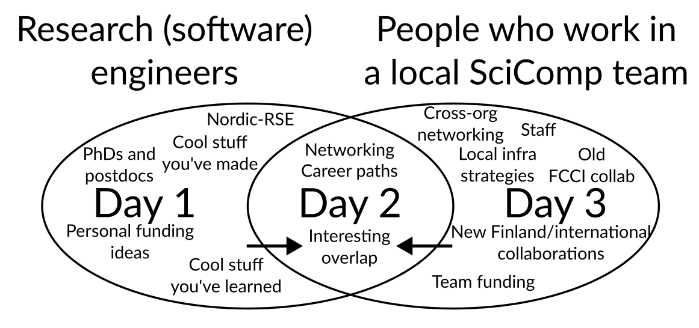

Nordic Basic Scientific Computing 2026
Finnish (+ friends) RSE Meetup
About the Event
The Finnish and friends RSE (Research Software Engineer) Meetup brings together people in Finland (and beyond) who develop or support research through software, data, and computing. Whether your title is RSE, scientist, data specialist, or IT support, if you’re helping research through code or computational tools - this event is for you. This is also for you, the RSE enthusiast, who enjoys the coding part of research work more or just as much as the research part.
Why a Finnish RSE Meetup?
While Nordic-RSE connects the regional community, this Finnish meetup provides a national focus for collaboration and sharing. It helps us:
Discuss challenges and opportunities specific to Finnish institutions and funding structures
Strengthen local networks and identify national needs (training, recognition, career paths)
Coordinate efforts between universities, research institutes, and infrastructure providers like CSC
This meetup complements the Nordic-RSE community by creating a space for practical cooperation within Finland, while staying connected to the wider Nordic and international RSE movements.
Who Should Join
Researchers and research software engineers developing or maintaining research code
Data and computing specialists supporting research workflows
IT staff, educators, and research managers interested in improving research software practices
Early-career researchers curious about RSE career paths
No formal RSE title is needed - if you develop, or support research software, you belong here.
Why Participate
By joining, you can:
Meet peers from across Finnish universities and research institutes
Learn how RSE groups and initiatives are organized in Finland
Share your own experiences, needs, and ideas for national cooperation
Help shape the future of Finnish/Nordic RSE activities - training, recognition, and community events
Good to know
This part of the event is sponsored by the Society of Research Software Engineering. Therefore we can keep the registration for free and offer lunch, coffee and snacks during the event. Therefore, please only register to this second half of the event, if you plan to attend in person to avoid any food waste.
Travel funding
Thanks to the Software Sustainability Institute we have some travel funding (travel + one night accomodation) available for you to visit the RSE-FI meetup (day 1+2).
More information at Travel funding for the RSE meetup
Organizers
The meetup is organized by Finnish members of Nordic-RSE with support from the Software Sustainability institute (via SSI fellowship of Samantha Wittke). Facilities are provided by Aalto Scientific Computing (ASC).
For any questions, ideas or if you would like to join the organizing committee, please contact samantha.wittke@csc.fi.
Scientific computing team meetup
About the event
This meetup is targeted towards people in local Scientific Computing (SciComp)/Research computing/Research Software Engineer support teams, for example university local HPC teams. We work in local capacity and are often overshadowed by the big national e-infrastructure providers (CSC, EuroHPC, etc) in attention and funding, yet we are the ones “on the ground” with the researchers. What’s our place in the world?
We have our own unique challenges and opportunities. This is a time we can talk together and learn from each other. (Others are of course welcome.) Maybe we can make a strategy for working together or getting some national funding?
Who should join?
For example, many of the teams that were part of the old Finnish Grid Infrastructure at univerities or local partners of the CodeRefinery collaboration. Really, if you work with Aalto Scientific Computing you are strongly invited and we’ll have some fun discussions. If you don’t, you are invited anyway.
Academic conferences usually don’t suit us, but we need a community. Our job is important and challenging, and we can’t do it alone. NoBSC is the right level for the networking we need to succeed at our jobs.
In this first iteration, we especially welcome people who support academic research through computing and data expertise in universities and research institutions, for example those in local HPC or RSE teams, cloud computing, and other computing services for researchers. But everyone is welcome: including those who might want these kind of jobs in the future.
Program ideas
We can especially talk about:
Local resources and teams in a time when computing is becoming more centralized.
Local services we run, how they compare to national services.
Advantages and disadvantages of being positioned locally.
What types of infrastructure funding we could apply for to increase our benefit or make (inter-)national collaborations. (Dedicated session: Wednesday afternoon)
Cool things and problems
Everyone will have a chance to (and be encouraged) to contribute to the session “Cool things and problems”. In this, each team presents three cool things they are doing, and three problems they are facing. We can then see.
Good to know
There is no registration fee, but also no food, snacks, coffe, and dinner provided for this part of the event. We will have to divide into smaller groups for lunch and dinners and distribute to various restaurants.
Organizers
Richard Darst (richard.darst atsign aalto.fi) is organizing this half.
Practical info
Location
Aalto University Campus, (Espoo), Helsinki Area. If you search
Dipoli in a map service it should find it, the address is Otakaari 24, 02150
Espoo.
Food
For the Finnish and Friends RSE meetup on Monday/Tuesday we will have food available according to dietary restrictions provided during registration. For others we will have a reservation at restaurants in the campus area. These restaurants can generally cater to all common diets, including vegetarian, vegan, gluten free, and lactose free. There are also two grocery stores at the metro station (A entrance).
Map
Tourist information and other activities
Wikivoyage Helsinki is usually pretty accurate and has information about the area and other sights to see.
Hotels
There are various hotels within easy walking distance. We don’t have any particular discounts. “Radison Blu Otaniemi” is the default location for university visitors. Other hotels in Helsinki downtown are fine also, the metro trip is 11 minutes (and costs ~3 euros).
Arrival
tldr: Aalto University is at the “Aalto University” metro stop. An “ABC” ticket manages the train from airport AND metro (and trams, busses, etc).
Air: Helsinki Airport. Between the airport and Aalto University, plan for max 1.5 hours (less than one hour is possible if you are efficient). From the airport, follow signs to the train station. Board a train and immediately use a contactless payment card to buy an ABC ticket at a card reader; this will get you all the way to the university (see public transport). Take the first train that comes (either way gets to downtown in about the same time). From the main station, walk to the connected metro station. Take a metro to the stop Aalto University (direction Tapiola or Kivenlahti), then continue in section “public transport” below.
Ferry: From Tallinn or Stockholm, there are ferries. Expect well under an hour to get from the ferry harbors to Aalto University. Take trams to the metro, but from each harbor walking to the metro is reasonable (not too far and nice walks). (Some attendees are also attending the Nordic e-infrastructure Conference in Tallinn on 27-29 May, they will be taking ferries from Tallinn the evening of 29 May. More info to be announced)
Bus, Train, etc. within Finland: You probably know how to get to the center of Helsinki. Follow public transit below.
Private vehicle: There isn’t free parking, but there are paid lots around.
Public transport: The public transport system is good and easy to use. The metro stop name is “Aalto University”, and the A exit is closer to us. Tickets can be bought at ticket machines, or via the “HSL App”. Aalto University is in the zone B, downtown is in the zone A, the airport in zone C, and tickets last a bit more than an hour and work on any public bus, train, metro, or tram (and as many transfers as you need). AB zone tickets cost about 3€.
If coming from airport: use single tickets, day tickets not worth it even with one extra trip to/from downtown.
Now, all tickets can be bought using contactless payment cards (details). Select the appropriate zones (AB or ABC) at the blue readers (before getting on the metro, after boarding bus/train/tram), then show your card. More info and ways to pay.
Code of conduct
Attendees are expected to follow the Aalto University code of conduct. Realisically you won’t read it, so here the general idea :
There will be attendees at a wide variety of points in their RSE/SciComp career. Try to understand them and help them go.
There will be attendees who know more or fewer other attendees. Take active steps to include them in your conversations:
Leave spaces in your circle for others to join, if you see someone hovering, invite them in and fill them in on what you are talking about.
Give special attention to understanding who is in your discussion groups and making sure you are talking at the right level.
This is a bottom-up event to support your networking. Please help out if see something to improve and you have time and ability.
Tell Richard or Samantha if you need something.
About
Organizers
Richard Darst, Aalto University (co-lead, RC/SciComp part)
Samantha Wittke, CSC - IT Center for Science (co-lead, RSE-FI)
Luca Ferranti, Aalto University
Ina Pöhner, University of Eastern Finland
Local volunteers: open
The organizers welcome others to take part in planning, either in short or long term. We communicate via the CodeRefinery chat, #NoBSC channel. This is the same place that Nordic-RSE people hang out.
Supported by
Aalto Scientific Computing (Science-IT): Staff time, sponsoring all facilities
CSC - IT Center for Science (EuroCC2 project) : Staff time
Software Sustainability Institute (through fellowship of Samantha Wittke): Travel funding, planning support
[Society of Research Software Engineering](https://society-rse.org/) : Catering support
History of NoBSC
You could say this event was first inspired when Richard Darst went to the Nordic e-Infrastructure Collaboration conference in 2017. This event had a variety of infrastructure and open science people not advertising why their stuff was so good, but discussion how to make things better. (At least that’s what it looks like with rose-colored glasses looking back.) This also kicked off the collaboration between ASC and CodeRefinery (a NeIC project dedicated to teaching basic software tools for researchers), which continues to this day.
CodeRefinery didn’t feel like a collaboration not between organizations, but between the people in the trenches directly helping or users. This was an extremely productive collaboration, not just in the main teaching but in connecting people together to talk about their other jobs besides teaching.
In 2019, we had a meeting it Helsinki called Nordic HPC, basically a lot of the CodeRefinery staff who were supporters of smaller university-based computing clusters. We enjoyed talking and sharing ideas, but soon we became closer together because we were all working online, and our collaboration was focused on online events.
Now, in 2025, we are trying to meet again in person. Hopefully there are the best parts from NeIC conferences, NeIC all-hands meetings, and NordicHPC, with even more people welcome to attend.
In addition to the SciComp team meetup, we have noticed that Research Software Engineering community, or “researchers who code” appreciate the connection to each other too - and there is a lot of connections and career movement between the two groups. Samantha’s fellowship with the Software Sustainability Institute looks at exactly that. Part of the fellowship is the contribution to the international RSE survey to get to know the Finnish and Nordic community needs a bit better. A short lunch meeting of RSE enthusiasts in Espoo to celebrate the international RSE day on October 9th 2025 was a good start to connect. For the Finnish RSE meetup, we aim to also get together RSE enthusiasts from all over the country, share what we do, learn from each other and also learn about the needs and wishes of the community.
Call for contributions
The theme of this conference is how we actually work and “the problems we found along the way”, not “advertising our product”. You can present ideas, what you couldn’t do, things you need advice on, and so on. You can request time slots for lightning talks, normal talks, posters or suggest a discussion session. If there are too many long talk requests, we will open a voting for the time to not have to decline any submitted talks. Only the length may change.
Abstract submission link
Submit a contribution
You’ll be able to submit talks, demos, or posters you’d like to present.
Our facilities include one main room (reserved), one breakout room (reserved), and several informal spaces throughout the building’s lobby areas that can be used for smaller discussion sessions (not reserved).
Selection process: We will review all submissions to make sure they align with the spirit of the event. Our goal is to accept as many contributions as possible. At the moment, our plan is to let attendees vote and allocate time slots based on those votes. When submitting, please keep your abstract concise and accessible to a general audience.
In short: Your contribution will most likely be accepted, the main question is how much time you’ll have to present.
Contribution inspirations
You are allowed to come with a question instead of a solution.
Introduction to how my team/organization works.
Cool procedure/practice/tool we have developed.
Cool software I have developed.
Book/video/event review and summary.
Problem or concern I am facing now.
Demo or poster about something you would like to have input on.
You can request how long your session should be: lightning talk (10 min), 20 min talk, poster/demo spot. You will get to know your assigned length in time before the event.
Unconference
We’ll also set aside time for an unconference: sessions that can be proposed or requested on the spot during the event. Maybe you’ll invite someone to run a session inspired by an informal coffee conversation, or you’ll discover that several attendees are curious to hear more about something you’re working on. The unconference time is meant exactly for those spontaneous, interest-driven sessions.
Schedule
When to attend
For the Finnish-RSE meetup, attend lunch on 2 Feb to lunch or dinner on 3 Feb.
For the SciComp team meetup, attend 3 Feb until lunch on Feb 4.
The overlapping day is events of interest to both groups.
You are of course welcome to attend more, if you would like.
Rough draft
Day |
Topic |
General plan |
|---|---|---|
2 February |
RSE |
|
3 February |
Interesting overlap of day1/day2 |
|
4 February |
SciComp/RSE teams |
|
Nordic Basic Scientific Computing is a gathering of everyone interested in supporting scientific computing (and a celebration of the diverse work that makes it all possible). Aalto Scientific Computing invites you to its homebase at Otaniemi Campus, 2-4 February 2026.
This event is split into two halves: The first half is a Finnish+friends RSE meetup , the second half is a meetup of Finnish scientific computing teams more targeted to service staff. The overlapping middle day has events that are interesting to both audiences. People are welcome to attend both halves.
{kind=link}

This event focuses on practical discussion and experience-sharing in the world of RSE and SciComp. Whether you develop research software, support researchers through local computing services or you are simply curious about these roles, this is gathering for you. It’s a time to roll up our sleeves, look under the hood and talk about what’s really going on.
Schedule (general plan)
See also
Day 1 (Mo, 2 Feb 2026): RSE meetup, starting with lunch at 11
Day 2 (Tu, 3 Feb 2026): RSE/SciComp overlap day: events, lunch, evening dinner, some social activities scattered between.
Day 3 (We: 4 Feb 2026): SciComp team meetup: events 9-12, lunch.
Quick info
See also
Location: Dipoli, Otaniemi Campus, Aalto University, Espoo, Helsinki area, Finland
Price: Free
Program: You can submit talks and other events in advance, but we also plan an “unconference session <https://en.wikipedia.org/wiki/Unconference>__” (program decided by attendees)..
Key dates:
5 December: Registration opens (closes when full)
Rolling acceptance of talks, posters/demos
7 January: First submission deadline, if needed we will have a voting on talks (all relevant talks accepted, only length may be decided by voting).
20 January: Talk length decided (latest)
2-4 February: Nordic Basic Scientific Computing event
Registration
We will provide long times for coffee breaks and lunches and make sure that everyone can find an engaging group to be a part of.
The event is intended to be relatively small to facilitate networking.
Online attendance: We’ve chosen to hold this event in person only, as we believe it offers the best environment for meaningful networking and a more engaging, collaborative atmosphere.
Registration link